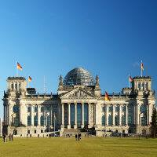
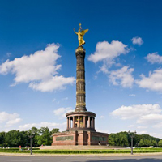
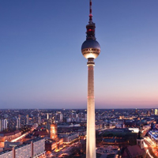
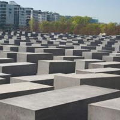
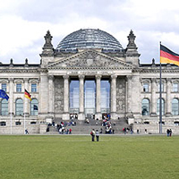

Sehenswürdigkeiten
- Brandenburger Tor
-

Das monumentale Brandenburger Tor kann auf eine rund 200jährige Geschichte zurückblicken.
Im Jahre 1793 wurde die von Johann Gottfried Schadow entworfene Quadriga auf das
Tor aufgesetzt. Die Plastik wurde im Laufe der Zeit drei Mal heruntergenommen.
Nach der Niederlage Preußens im Jahre 1806 verschleppte Napoleon die Quadriga nach
Paris. Doch durch den Sieg der Allianz konnte sie acht Jahre später wieder zurück
geholt und an ihren alten Bestimmungsort aufgestellt werden. Während der Kämpfe des
Zweiten Weltkrieges wurde das Brandenburger Tor schwer beschädigt. Die Plastik war
durch die Bombenangriffe sogar so stark beschädigt worden, dass sie 1956 im Zuge
der Rekonstruktion des Tores entsorgt und durch eine Kopie ersetzt werden musste.
Fast drei Jahrzehnte sollte nun das Brandenburger Tor ein isoliertes Dasein fristen
aber trotzdem im Brennpunkt der Weltöffentlichkeit stehen. Am 22. Dezember 1989
erfolgte unter dem Jubel von mehr als 100.000 Menschen die Öffnung des Tores. Die
Quadriga wurde aber durch die Vereinigungsfeiern, vor allem in der Silvesternacht
1989/90, so stark beschädigt, dass sie zwei Jahre später restauriert werden musste.
Am 3. Oktober 2002 wurde das Brandenburger Tor nach knapp zwei Jahren feierlich
enthüllt und ist seitdem wieder ein Magnet für Touristen aus aller Welt.
Quelle: www.berlin.de/brandenburger-tor
- Siegessäule
-

Mitten im Tiergarten steht eines der bekanntesten Wahrzeichen Berlins: die Siegessäule
mit der Siegesgöttin Viktoria. Die Siegessäule wurde 1873 als Nationaldenkmal zur
Erinnerung an preußisch/deutsche Siege gegen Dänemark, Österreich und Frankreich auf
dem damailgen Königsplatz vor dem Reichstagsgebäude eröffnet. Mitten im Tiergarten steht
eines der bekanntesten Wahrzeichen Berlins: die Siegessäule Mitten im Tiergarten steht
eines der bekanntesten Wahrzeichen Berlins: die Siegessäule
mit der Siegesgöttin Viktoria. Die Siegessäule wurde 1873 als Nationaldenkmal zur
Erinnerung an preußisch/deutsche Siege gegen Dänemark, Österreich und Frankreich auf
dem damailgen Königsplatz vor dem Reichstagsgebäude eröffnet. Vom Kriegssymbol zum
Party-Mittelpunkt Dort wurde die mit der Figur insgesamt 69 Meter hohe Siegessäule
vom Kriegssymbol nach der Wiedervereinigung immer mehr zur Partykulisse. 285 Stufen
zur Aussichtsplattform. Dort wurde die mit der Figur insgesamt 69 Meter hohe Siegessäule
Wer die Aussichtsplattform zu Füßen der Viktoria erreichen will,
muss gut zu Fuß sein. Doch hat man die 285 Stufen erst einmal bewältigt, bietet sich ein
weiter Rundblick über den Tiergarten und das Stadtgebiet.
Quelle: www.berlin.de/siegessaeule
- Fernsehturm
-

Der Berliner Fernsehturm ist mit seinen 368 Metern das höchste Bauwerk in Deutschland
und zugleich das markanteste Wahrzeichen Berlins. Touristen und Einheimische strömen
in den Fernsehturm, um in der Turmkugel zu speisen oder auf dem Aussichtsdeck den Blick
über Berlin zu genießen. Jährlich kommen rund eine Million Besucher aus aller Welt.
Ziel ist die Aussichtsetage in 203 Meter Höhe, von wo man bei gutem Wetter bis zu 40 Kilometer
weit gucken kann. Eine Etage darüber befindet sich das "Telecafé", das sich in einer
halben Stunde einmal um die eigen Achse dreht. Es wird gern erzählt, die Berliner würden
den Fernsehturm. "Telespargel" nennen. Doch dieser von den DDR-Offiziellen gewünschte Spitzname
"Telespargel" nennen. Doch dieser von den DDR-Offiziellen gewünschte Spitzname setzte sich
schon zu DDR-Zeiten nicht durch. Es kursierten aber vom Volk geschaffene Spitznamen wie
„Imponierkeule“, „Protzstengel“ oder „St. Walter“ (SED-Parteichef Walter Ulbricht).
In der Regel benutzen die Berliner aber die Bezeichnung Fernsehturm.
Quelle: www.berlin.de/siegessaeule
- Holocaust-Mahnmal
-

Das Holocaust-Mahnmal besteht aus einem wellenförmigen Feld mit rund 2700 Stelen und soll die
Besucher mit dieser abstrakten Form zum Nachdenken anregen. Der unter dem Holocaust-Mahnmal
gelegene "Ort der Information" dokumentiert die Verfolgung und Vernichtung der europäischen
Juden. Im Juni 1999 beschloss der Bundestag, das "Denkmal für die ermordeten Juden Europas"
in unmittelbarer Nähe des Brandenburger Tors zu bauen. Nach zwei Jahren Bauzeit wurde das
Denkmal am 10.Mai 2005 feierlich eröffnet. Auf einem rund 19.000 Quadratmeter großen Feld
wurden 2711 Stelen installiert – so wie es der Entwurf des New Yorker Architekten Peter
Eisenman vorsah. Schon Ende der 1980er Jahre wurden Forderungen laut, ein Denkmal für die
europäischen Juden zu bauen. Die Diskussion über Ort, Botschaft und Gestalt des Denkmals
sollte schließlich fast ein Jahrzehnt dauern. Im Frühjahr 1995
schrieb die Berliner Senatsverwaltung einen ersten künstlerischen Wettbewerb aus – es wurden
528 Arbeiten eingereicht. Im Jahre 1997 wurde ein zweiter Wettbewerb ausgeschrieben. Der Entwurf
von Peter Eisenman wurde angenommen, musste aber im Laufe der Zeit mehrmals verändert werden.
Im Juni 1999 beschloss der Deutsche Bundestag den Bau und die Ergänzung des Mahnmals um einen
„Ort der Information“.
Quelle: www.berlin.de/holocaust-mahnmal
- Reichstag
-

Das Reichstagsgebäude ist eine der meistbesuchten Sehenswürdigkeiten Berlins. Seit dem Umzug der
Regierung von Bonn nach Berlin wurden mehr als 15 Millionen Besucher gezählt. Vor allem die
gläserne Kuppel ist eine Attraktion für Berliner und Touristen. Das Reichstagsgebäude ist
seit 1990 Sitz des Deutschen Bundestages. Am 4. Oktober 1990 fand im Plenarsaal die erste
Sitzung des aus Bundestag und Volkskammer zusammengesetzten gesamtdeutschen Parlaments statt.
Knapp drei Monate später fand im Reichstagsgebäude die erste konstituierende Sitzung des
gesamtdeutschen Bundestages statt. Die Abstimmung über den zukünftigen Regierungssitz fiel
am 20. Juni 1991 zugunsten Berlins aus. Am 4. Oktober 1990 fand im Plenarsaal die erste
Sitzung des aus Bundestag und VolkskammerAm 4. Oktober 1990 fand im Plenarsaal die erste
Sitzung des aus Bundestag und Volkskammer zusammengesetzten gesamtdeutschen Parlaments statt.
Knapp drei Monate später fand im Reichstagsgebäude die erste konstituierende Sitzung des
gesamtdeutschen Bundestages statt. Die Abstimmung über den zukünftigen Regierungssitz fiel
am 20. Juni 1991 zugunsten Berlins aus.Die Abstimmung über den zukünftigen Regierungssitz fiel
am 20. Juni 1991 zugunsten Berlins aus.
Quelle: www.berlin.de/reichstag